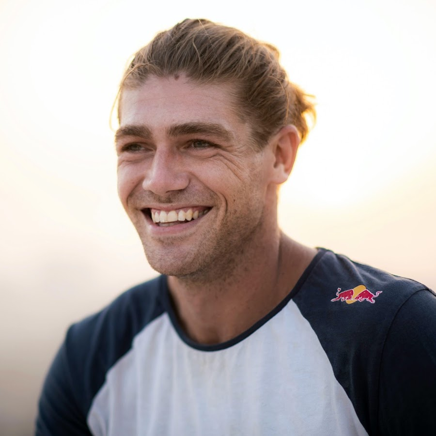

1. Dominic Di Tommaso:
Plus connu sous le nom de Dom Tomato cet athlète commença le parkour en étant éboueur. Il est célèbre notamment grâce à son salto au dessus des escaliers Lyon 25.

2. Ed Scott:
Ed scott est un athlète d'origine britannique. Considéré comme l'un des meilleurs athlètes du monde il a finni 2ème au red bull art of motion 2022 (compétition de parkour)
3. Jason Paul:
Jason Paul est l'un des athlètes les plus créatifs au monde d'origine allemande. Il travaille depuis longtemps en tant qu'athlète à red bull et traverse le monde pour filmer des vidéos de parkour